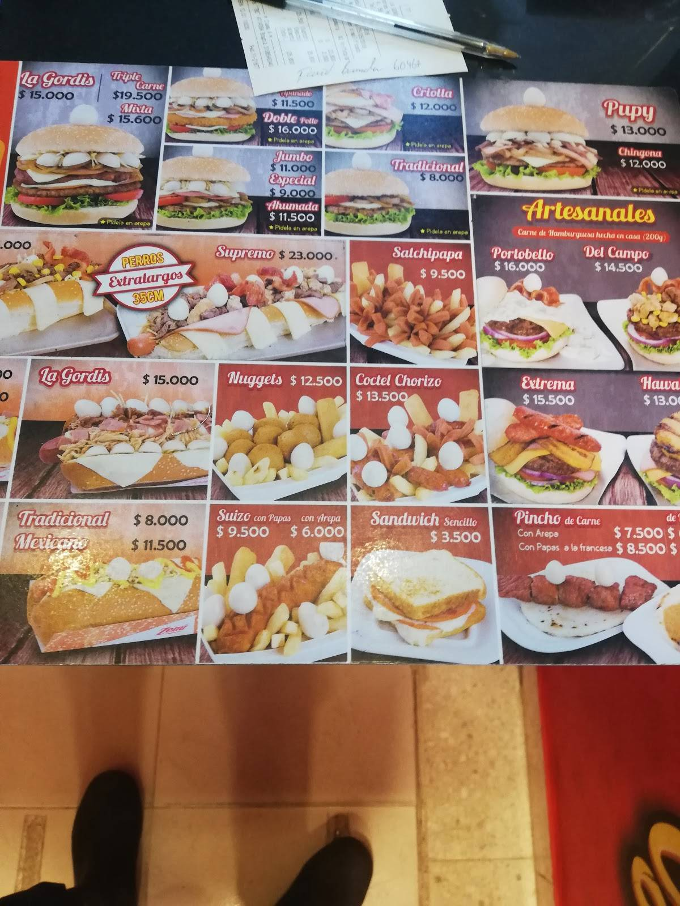
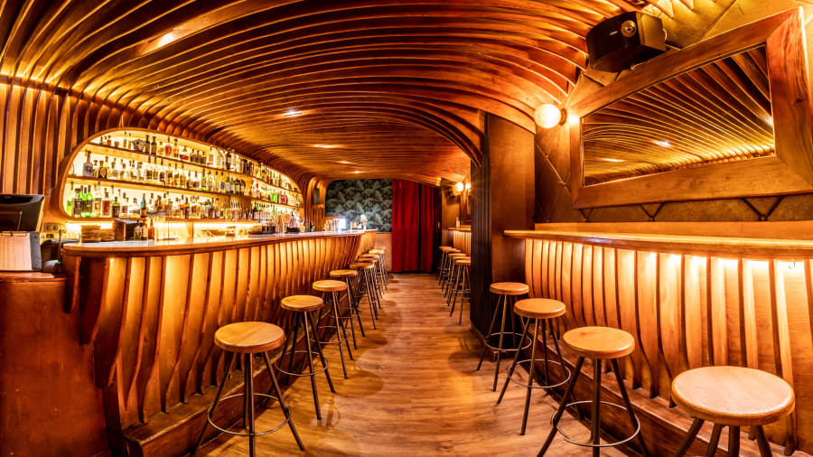

En el Hotel SweetDreams, entendemos que la gastronomía es una parte fundamental de la experiencia de viaje.
Por eso, hemos creado un mundo culinario único que celebra la diversidad de sabores locales e internacionales
en un entorno elegante y acogedor.
Nuestro restaurante principal, "Sabor Celestial," es un lugar donde los platos exquisitos se combinan con un
ambiente sofisticado, perfecto para cenas románticas o comidas familiares. Ofrecemos una amplia variedad de opciones
que van desde la cocina local colombiana hasta platos internacionales, todos preparados con ingredientes frescos y de
la más alta calidad.
Para aquellos que buscan un momento de relajación, nuestra cafetería "Dulces Sueños" ofrece una selección de
café, té y deliciosos pasteles caseros. Y en el bar "Sueños Estrellados," puedes disfrutar de cócteles
artesanales mientras te sumerges en la magia de la noche.
Además, ofrecemos servicio a la habitación las 24 horas para que puedas disfrutar de nuestras delicias en la
comodidad de tu habitación.
Sabor celestial
Descripción:El restaurante "Sabor Celestial" es el corazón culinario de SweetDreams. Ofrece una experiencia gastronómica
excepcional con una mezcla de cocina local e internacional. El ambiente es elegante y acogedor, perfecto para
cenas románticas o comidas familiares.
Meú:El menú incluye una variedad de platos exquisitos que van desde la cocina local colombiana hasta
platos internacionales. Ofrecemos opciones para todos los gustos, desde carnes a la parrilla hasta opciones
vegetarianas y platos de mariscos frescos.
Precio promedio:Desde $30 USD por comida

cafetería "Dulces Sueños"
Descripción:La cafetería "Dulces Sueños" es el lugar perfecto para disfrutar de un café o té por
la tarde, acompañado de una selección de pasteles y postres caseros. También sirve almuerzos ligeros y
bocadillos rápidos.
Meú:El menú de la cafetería ofrece una variedad de cafés, tés, pasteles, sándwiches y ensaladas
frescas.
Precio promedio:Desde $10 USD por merienda.

Bar "Sueños Estrellados"
Descripción:El bar "Sueños Estrellados" es el lugar perfecto para relajarse después de un día de
exploración. Ofrece una amplia selección de cócteles artesanales, vinos y licores. El ambiente es acogedor,
con música en vivo algunas noches.
Meú:El menú de bebidas incluye cócteles clásicos y creaciones exclusivas del barman, así como una
selección de aperitivos y tapas.
Precio promedio:Desde $15 USD por comida
Eventos gastronomicos
Descripción:A lo largo del año, SweetDreams organiza eventos gastronómicos especiales, como cenas temáticas,
catas de vinos y festivales culinarios. Estos eventos ofrecen a los huéspedes la oportunidad de experimentar
sabores únicos y emocionantes.
Meú:El menú incluye una variedad de platos exquisitos que van desde la cocina local colombiana hasta
platos internacionales. Ofrecemos opciones para todos los gustos, desde carnes a la parrilla hasta opciones
vegetarianas y platos de mariscos frescos.
Precio promedio:Desde $30 USD por comida
Nota
Es importante tener en cuenta que los precios pueden variar según la temporada, la
disponibilidad y la categoria seleccionada. Los precios mencionados
son aproximados y pueden cambiar. Se recomienda verificar los precios exactos y la disponibilidad
al realizar una reserva. Cada tipo de habitación en el Hotel SweetDreams está diseñado para
ofrecer una experiencia única y satisfactoria a nuestros huéspedes, adaptada a sus necesidades
y preferencias individuales.